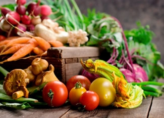

It’s the beginning of the growing season and thousands of farmers markets and farm stands across the country will soon be in full swing, bustling with customers buying fresh fruits and vegetables from nearby farms.
But with food prices on the rise, it’s hard to get excited about buying any food, let alone locally grown. However, you or someone you know may be surprised to learn that the U.S. government helps make local, fresh and nutritious foods more affordable for those who can least afford them.
For starters, many of the farmers markets accept federal nutrition assistance money. The Food Stamp program, which is funded by the U.S. Department of Agriculture (USDA), is the most well-known of these nutrition assistance programs. But did you know there’s another government program of this kind, exclusively for foods procured from farmers markets? It’s called the Farmers Market Nutrition Program (FMNP).
With people all across America feeling the pinch of high food and fuel prices, and many families seeking assistance for the first time, this program can supplement the food budgets of low-income mothers, children and seniors. Coupons for fresh, locally grown produce will be made available this growing season as part of the Women, Infants and Children (WIC) Farmers Market Nutrition Program (FMNP) and the Senior Farmers Market Nutrition Program (SFMNP).
An estimated $40 million worth of coupons will be distributed to approximately 2.5 million women and 825,000 seniors this season to use at select farm-to-consumer outlets. The total value for each recipient can be as low as $10, or up to $50, depending on what state you live in.
While $10, or even $50, for the entire growing season may seem low, the coupons were originally designed by forward-thinking farm and food security communities in the Northeast in the late 1980s. They wanted to introduce new, low-income shoppers to local produce at farmers markets and help save small, family-owned farms during an era when thousands of farms disappeared from the American landscape.
Beyond the dreams of many, the FMNP has helped fuel the growth of farmers markets in low-income downtown areas all over the country. According to Maritza Wellington Owens, who operates six farmers markets in low-income communities in New York, “upwards of 50 percent of the sales of markets in lower income neighborhoods come from FMNP coupons.”
A win-win for consumers and farmers, the coupons attract farmers to new weekly markets in the residents’ neighborhoods. In fact, due to the growth of farmers market shopping, some farms have actually shifted acreage from commodities to fruits and vegetables to sell at these markets.
When the coupons run out, many customers come back with cash or Food Stamps, which can be used at regular grocery stores or farmers markets. From apples in Washington and asparagus in New York to tangerines in Florida and fresh kale and strawberries in Southern California, women and seniors fill their baskets with delicious and nutritious fruits and vegetables within hours of their having been picked from the ground. Curious shoppers may ask farmers questions about how the food was grown or get easy recipes and handy storage tips for foods they’ve previously not been eating.
The social energy at the farmers market also provides a sense of community. Nutrition education is frequently a part of the farmers market experience. Classes for mothers and seniors range from mashing baby food from cooked vegetables to learning about how a diet rich in unprocessed and fresh foods can improve overall health and well being, including the prevention of chronic diet- and poverty-related illnesses, such as diabetes, obesity, high blood pressure, cancer and heart disease.
The coupons come with a directory of approved farmers markets and a list of eligible fruits, vegetables and herbs. (Processed foods, local meat and dairy products are not included but can be purchased with Food Stamps). So who’s eligible? Seniors who are 60 years of age and older and women who are breastfeeding, pregnant or have children under the age of 5, and have incomes less than 185 percent of the Federal Poverty Income Guidelines ($25,327 for a two-person household).
FMNP checks are typically distributed through local WIC Agencies and County Offices on Aging. In most states, seniors who are enrolled in the USDA Food Stamps, Supplemental Security Income (SSI) and/or Medicaid are pre-qualified for SFMNP. Women, infants (over 4 months old) and children that have been certified to receive WIC program benefits or who are on a waiting list for WIC certification are eligible to participate in the FMNP.
No matter whether you’re interested in local foods or just want to make every penny count this summer, if you think that you, or a friend or family member may be eligible for the Farmers Market Nutrition Program, you can learn more about the nutrition programs in your area by calling your local WIC or County Office on Aging. For a list of states, territories and Native American Reservations that participate, visit the USDA’s Food and Nutrition Service Web sites:
For more information on Food Stamps and how to apply, visit http://www.fns.usda.gov/fsp/.
|
 ISTOCKPHOTO/KELLY CLINE Although many people find it hard to afford fresh fruits and vegetables for their family, the U.S. government can help by supplying Food Stamps and coupons that are redeemable at farmers markets to those in need. |
|
|